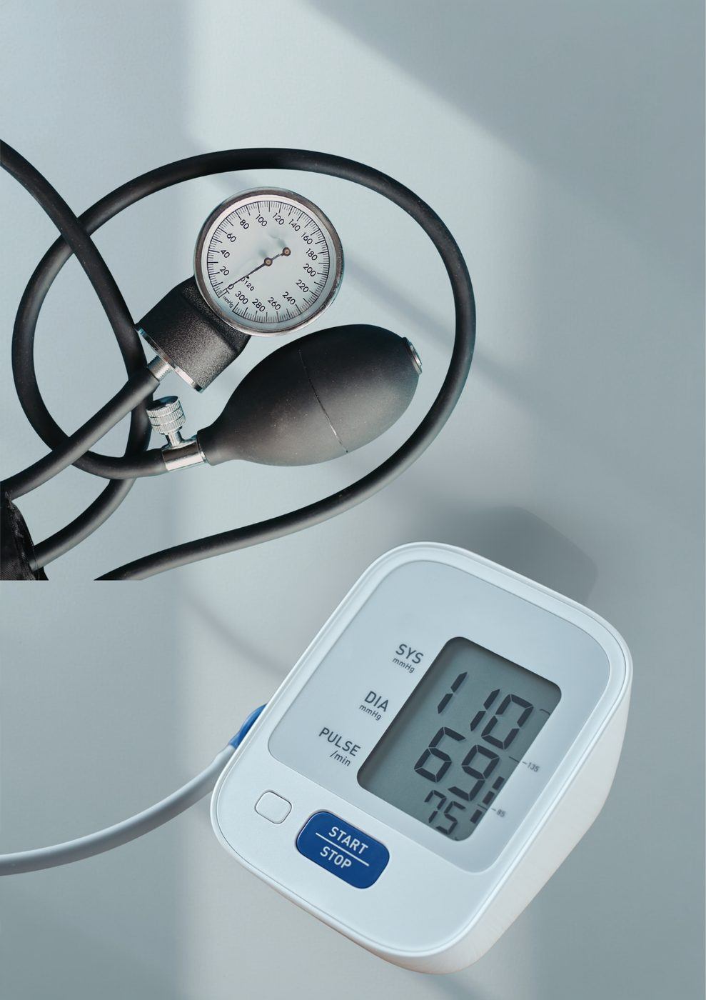

Les changements de mode de vie peuvent-ils faire baisser la tension ?
Réduire l'apport en sel, adopter une alimentation riche en fruits et légumes, rester physiquement actif, gérer son poids, limiter l'alcool et gérer le stress peuvent faire baisser sensiblement la tension artérielle chez de nombreuses personnes.
Mesures d'hygiène de vie qui aident
- Réduire le sel — y compris le sel caché dans les aliments transformés et en conserve
- Manger davantage de fruits, de légumes et de céréales complètes
- Une activité physique régulière, même une marche quotidienne de 30 minutes
- Atteindre et maintenir un poids santé
- Limiter la consommation d'alcool
- Gérer le stress, et privilégier un sommeil de qualité
Aucun de ces changements ne doit se faire du jour au lendemain — des changements progressifs et réguliers tendent à produire des résultats plus stables et durables que des changements soudains et radicaux.
Quand les changements de mode de vie ne suffisent pas
Ces mesures complètent l'avis médical, elles ne le remplacent pas. Si les valeurs restent constamment élevées malgré de véritables changements de mode de vie, un traitement médicamenteux devient un élément important pour protéger le cœur, les reins et le cerveau à long terme. L'hypertension n'a souvent aucun symptôme, ce qui explique pourquoi on la surnomme parfois une maladie « silencieuse » — on peut se sentir parfaitement bien alors qu'elle cause des dommages en silence.
Pourquoi le suivi régulier est important
La tension artérielle fluctue naturellement, donc une seule mesure raconte rarement toute l'histoire. Un suivi régulier — à domicile ou lors de consultations — permet de déterminer le juste équilibre entre mesures d'hygiène de vie et médicaments pour vous spécifiquement, et permet d'ajuster le traitement au fil du temps plutôt que de le laisser fixe pendant des années.
Une question sur vos propres symptômes ? Contactez-nous directement.
Écrire sur WhatsAppCet article fournit des informations générales sur la santé et ne remplace pas une consultation médicale. En cas d'urgence médicale, appelez le SAMU (114) ou rendez-vous à l'hôpital le plus proche.